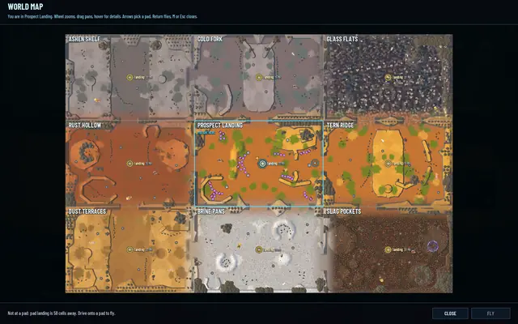
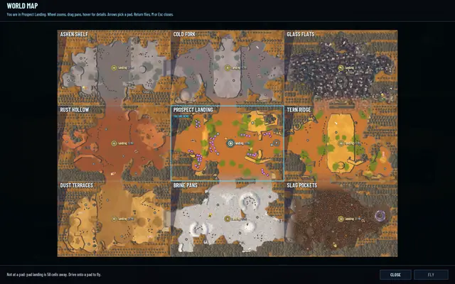
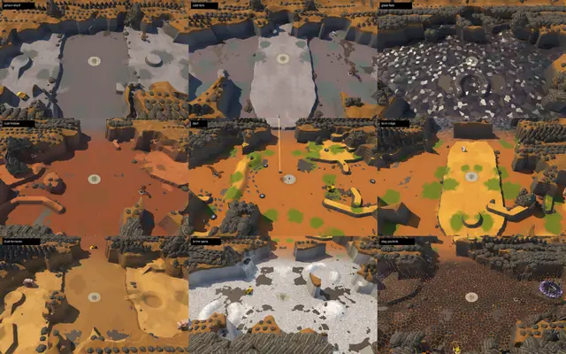
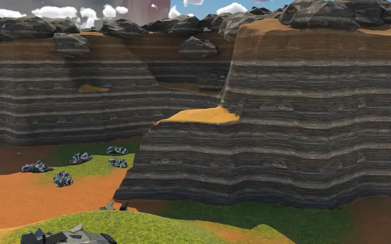
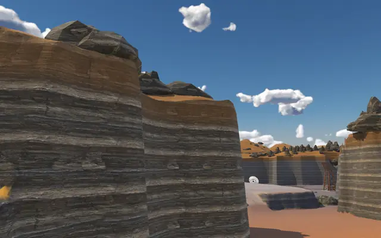
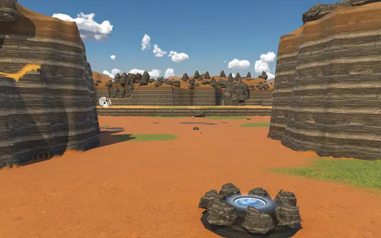
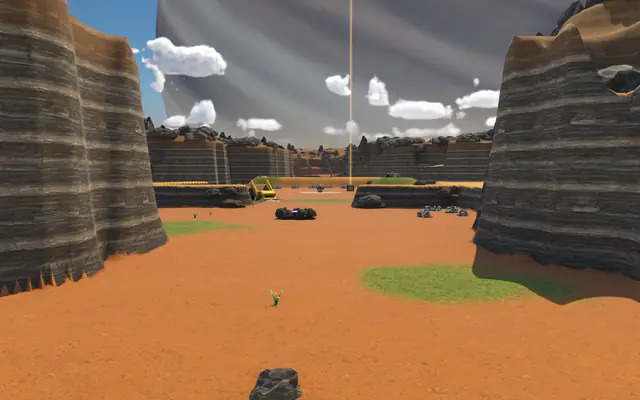
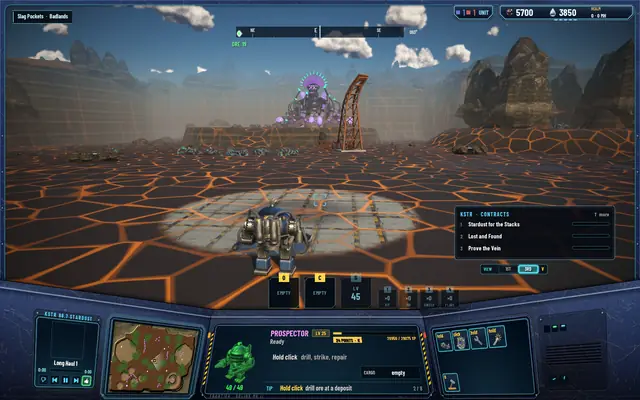
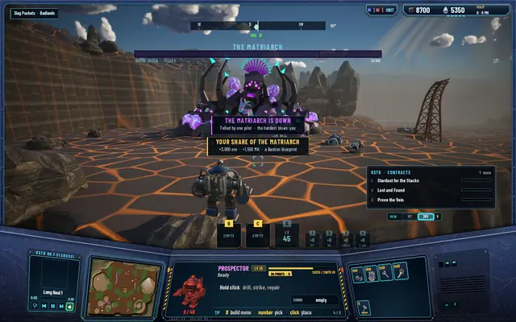

Valleys, not tiles: the regions reshaped
After the regions got walls and passages, they still looked like what they are underneath: nine squares in a grid. Now each one is a basin with a shape of its own, and from above the high ground runs on between them as one land.

A shape for each region
A new tool draws the shapes, and it's in the repo with the rest. Each region is now a natural basin taking 50 to 66% of its square. Bays cut 10 to 30% into the land, rock spurs push out between them, and where two bays face each other the land pinches into a neck. Three regions have islands of rock in the middle that the land runs round. No straight run of wall is longer than about 12 to 15 cells, and every passage narrows toward its gap like the mouth of a canyon.
For each region the tool tries 40 shapes, checks that every pad, deposit and site can still be reached on foot from the landing pad, and keeps the valid one with the shortest straight wall. Deposits the walls would have swallowed move onto the land nearby.
The walls step: along stretches of them there's a shelf a few cells wide halfway up, then the rest of the climb. Their tops share one rock colour across the whole world, whatever the ground below, so on the map the high land reads as one piece with basins cut into it.
From above, before and after

Before: nine squares.
After: nine basins in one land. Before, seen at an angle.
Before, seen at an angle.
After: bays, spurs and islands.


On the ground

A bay, with its shelf.
Along a wall: it bends before it gets long.
The passage from Prospect Landing.
The same passage from Tern Ridge.


The nest is back
Two bugs came in with the walls, and both are fixed. The Matriarch's nest mound had stopped drawing, and a black slab stood near her in Slag Pockets. Both had one cause: a set of ground built away from the world's origin placed its scenery twice, the second copy offset.
Slag Pockets, fixed

The nest from the pad, its mound back.
Her fall, with no slab in the way.


The crossing, measured again
Walking from Tern Ridge into Prospect Landing on the new shapes, frames ran 11.6 ms at the median, and the longest at the moment of the crossing was 13.2 ms. The walk held between 4.55 and 4.99 cells a second against 4.79 before it, and the camera's largest step was 0.08 cells.
Every test suite passes: 494 core, 241 server and 85 network.